下面每个数字都来自 scripts/lookdev-v6/v6_part_audit.py 对已构建 blend 的直接量测（不是参数推算）。测量方式是：把每个部件的网格顶点投到身体网格表面求带符号距离，正值＝探出皮肤，负值＝埋在皮肤里面。
| 部件 | 最深 | 外露顶点 |
|---|---|---|
| 脚趾 Toe0/3 | −10.2 mm | 0% |
| 脚趾 Toe1/2 | −20.0 mm | 0% |
| 趾垫 Bean | −9.5 … −18.3 | 0% |
| 爪 Claw | −11.5 … −21.7 | 0% |
| 主肉垫 Pad | +0.3 mm | 3.3% |
build_lingxi_v5.py 里把整组 toe/bean/claw/pad 沿 −y 前移约 35–40 mm、z 下移约 10 mm；或把 paw 椭球（FrontPaw y 半径 .088 / RearPaw .085）收短 ~15 mm。目标：趾前缘探出皮肤 8–12 mm，趾间留出可见缝。只缩毛永远救不了这一条。| 量 | 目标 | 实测 |
|---|---|---|
| 耳高 | 135 mm | 146.8 (+8.7%) |
| 基部宽 | 112 mm | 147.0 (+31%) |
| 宽高比 | 0.83 | 1.00 |
| t=0.9 处宽 | — | 18.1 mm |
| t=1.0 处宽 | — | 0（尖） |
ear_wid() 的 .058 → 约 .044（宽回到 112 mm），flare 1.30 → 1.20；顶端 t>0.88 用半圆弧封顶（保持 ~30 mm 宽而不是收到 0）。不动 V6_EAR——整体缩到 0.82 你上一轮已经否掉了，问题在比例和顶端形状，不在大小。v6_face_shape.py 同一把尺子，且这次量的是几何不是像素，不受毛干扰）。| 量 | 参考 | 实测 |
|---|---|---|
| 鼻宽 / E | 0.311 | 0.261 (−16%) |
| 嘴宽 / E | 0.288 | 0.392 (+36%) |
| 嘴宽 ÷ 鼻宽 | 0.93 | 1.50 |
| 唇线在鼻下 | 0.310 E | 0.250 E（高 ~7 mm） |
MOUTH_W .024 → .0165（V6_MOUTH_W 0.69），GAPE_W 同步 .036 → .025；LIP0 下移 7 mm（V6_LIP 1.0 → 0.985，LIP_DZ 会自动带口腔袋/舌/牙/下颌一起走）；V6_NOSE_W 1.0 → 1.19 把鼻镜补到 0.311E。用 B4 的 blend 重跑了全部 15 个动作（render_lingxi_v5_poses.py，480px / 12spp，逐帧扫描挑"离静止最远"的那一帧）。这一轮顺手修了选帧逻辑：之前 5 个动作渲在了眨眼/闭眼帧上（Idle .85、Happy 1.0、Yawn .84、Stretch .91），因为 Blink 被排除在评分外、却没被排除在选中的帧之外；现在闭眼帧要高出一大截才会被选中，Sleep 仍然渲成闭眼。
改的是 scripts/blender/build_lingxi_v5.py 里 pose() / place_legs() / solve_sit() 的具体数值，每一处都由 v6_clip_review.py 先量后改、改完再量。每张卡左＝修复前（round-b4），右＝修复后（round-k：G3 爪/嘴 + 闭眼重写 + round-j 嘴部重写 + round-k 步态重写，standard 质量重渲）。最低点是真实网格顶点离地面的高度，站立时是 +1.5 mm，负值＝陷进地面。
| 动作 | 修前最低点 | 修后最低点 | 改了什么 | 判定 |
|---|---|---|---|---|
| Idle | +0.9 | +1.5 | 基准，未动 | 基准 |
| Walk | +0.5 | +1.5 | 后腿步幅 dy*=1.30; dz*=1.25：后爪行程 6.7 → 45.0 mm，后/前比 0.42 → 1.24 | 已修 |
| Run | +1.9 | +9.6 | 未动（选中的是腾空帧） | 好 |
| Jump | +284.9 | +277.4 | 补平衡信号：尾 −.45/.30/.30、耳后压 .35、脊柱 .10 —— 尾 1.4° → 60.1°，耳 1.1° → 20.0° | 已修 |
| LieDown | −62.6 | +0.4 | 卧倒脚靶 z .045+.11 → .108+.11：脚掌收到体侧，不再拖到地下 | 已修 |
| SideLie | −165.5 | +0.6 | 侧躺时身体宽度变成高度，按 v6_ground_calib.py 的线性扫描把 root 抬 .139 m | 已修 |
| Sleep | −151.4 | +0.2 | 同上，root 抬 .127 m | 已修 |
| Curious | +0.8 | +1.5 | 未动（第一轮已经加了前倾 + 头侧转） | 偏弱，未改 |
| Happy | +1.9 | +1.5 | 未动 | 好 |
| Yawn | +0.9 | +1.5 | 补身体：前爪前伸 .075、弓背 .14、沉胸 −.030、尾 −.30/.22 —— 离 Idle 81° → 157° | 已修 |
| Lick | −85.7 | −6.4 | 坐姿求解器 hip 105 → 170 mm、脊柱 62° → 44°（只改 hip 不动，因为前腿已打直）；尾改卷 T1 −.40 / T2-4 1.15·1.10·1.05，尾尖 −77 → +0.2 mm | 已修到几何极限 |
| Bite | −6.1 | +1.5 | 前爪抬 .11·fac（行程 0.1 → 83.7 mm）+ 头前冲 + 飞机耳 —— 离 Idle 123° → 220° | 已修 |
| Knead | +0.8 | +1.1 | 未动 | 好 |
| Stretch | −72.2 | −7.3 | 从 LieDown 组里拆出来独立成姿（root −.055、脊柱 .16、头 −.22、前爪前伸 −.11s、尾巴 −.35）—— 离 Idle 149° → 170°，不再是 LieDown 的第二张卡 | 已修 |
| PawPlay | +1.3 | −2.8 | 未动（2.8 mm 是接触压实，不是陷地） | 好 |
补一条渲染器缺陷：render_lingxi_v5_poses.py 把 Blink 排除在评分外、却没排除在选中的帧之外，5 个动作渲在了眨眼/闭眼帧上（Idle .85、Happy 1.0、Yawn .84、Stretch .91）。现在闭眼帧要高出一大截才会被选中，Sleep 仍然渲成闭眼。
Lick 的 15 mm 曾是硬约束（round-l 已收到 6.4 mm，见上节），不是没调够：坐姿里两条前腿已经打直到 L1+L2 极限（leg_ik 的 over 一抬根就 > 0），所以身体抬不起来，15 mm 只能靠髋部高度换——而髋部再抬 15 mm 就要把脊柱压平到 34°，求解器算下来不划算。现在的形态是：臀部 15 mm 压实、尾尖正好落地、前爪稳稳踩地。
全部由 scripts/lookdev-v6/v6_clip_review.py 量出。行程＝该动作整段里每只爪走过的高度范围（单帧看不出步态，只有行程能）；最低点＝真实网格顶点最低处，站立时是 +0.9 mm，所以负值就是陷进地面的深度。
| 动作 | 身体高度 | 最低点 | 身长变化 | 前爪行程 | 后爪行程 | 耳 | 下颌 | 尾 | 判定 |
|---|---|---|---|---|---|---|---|---|---|
| Idle | 0 | +0.9 | 0.8 | 0 | 0 | 4.9° | 0 | 5.9° | 基准 |
| Walk | +9.3 | +0.5 | 0.8 | 15.0 / 17.0 | 6.7 / 6.6 | 3.5° | 0 | 4.2° | 后腿摆幅只有前腿 42% |
| Run | +25.5 | +1.9 | 0.8 | 27.8 / 24.7 | 26.9 / 26.7 | 4.9° | 0 | 5.8° | 好，四爪均衡 |
| Jump | +317.2 | +284.9 | 8.6 | 296.4 | 276.5 | 1.1° | 0 | 1.4° | 跳起来了，但耳和尾几乎不动 |
| LieDown | −110.0 | −62.6 | 2.2 | 0.8 | 7.1 | 5.2° | 0 | 6.2° | 陷地 63 mm |
| SideLie | −25.0 | −165.5 | 2.2 | 139.8 / 70.4 | 150.8 / 81.1 | 5.2° | 0 | 6.2° | 陷地 166 mm（最严重） |
| Sleep | −25.0 | −151.4 | 1.7 | 0 | 0 | 5.7° | 0 | 6.9° | 陷地 151 mm |
| Curious | −29.2 | +0.8 | 49.8 | 0 | 0 | 18.9° | 0 | 17.4° | 只有头+耳在动，识别度最低 |
| Happy | +21.0 | +1.9 | 150.1 | 45.6 | 0 | 14.9° | −2.3° | 96.3° | 尾大摆 + 弓背蹭，信号最强 |
| Yawn | 0 | +0.9 | 13.6 | 0 | 0 | 1.5° | −76.0° | 1.8° | 嘴张得够大，身体完全不动 |
| Lick | −178.8 | −85.7 | 47.2 | 右 438.5 | 4.1 | 5.7° | −18.3° | 6.9° | 形体最完整，但陷地 86 mm |
| Bite | −28.0 | −6.1 | 10.7 | 0.1 | 0 | 51.5° | −18.3° | 6.9° | 耳朵后压很好，四爪完全不动 |
| Knead | 0 | +0.8 | 15.1 | 26.0 | 0 | 12.6° | 0 | 45.0° | 好：交替踩 + 眯眼 34° + 伸爪 0.7 |
| Stretch | −110.0 | −72.2 | 3.9 | 1.6 | 7.1 | 4.5° | 0 | 5.4° | 和 LieDown 几乎同一个姿态 |
| PawPlay | −8.7 | +1.3 | 32.3 | 左 131.7 | 0 | 6.0° | 0 | 57.7° | 好：伏低 + 挥爪 + 甩尾 |
你点名的「躺下去效果不好」，病灶各不相同，都在 pose() 的三个躺姿块里量出来后重做的。v6_clip_review.py 的实测（round-k → round-l）：
| 动作 | 病灶（round-k） | 改法 | 关键数字 | 判定 |
|---|---|---|---|---|
| LieDown | 脊柱放平到 2.5°、身长比站立还长，像压扁的毯子；前爪白毛戳出身体前缘像两个雪橇 | 狮身趴：前臂平放在肩前的地上，胸贴地，颈压低头微抬，尾巴绕到镜头一侧 | 最低点 Body +0.4；脊柱 2.5° → 4.5°；前爪退到鼻尖后 27 mm | 已修 |
| SideLie | root 抬 139 mm，躯干悬空 27 mm；头立着（颈 13.1°）；四爪朝天（爪尖翘到 264–277 mm）——像翻滚装死的玩具球 | 转 1.25 → 1.57 rad，root 抬到体宽一半；头侧枕地；上侧两腿搭在下侧腿上 | 悬空 27 → Body +0.6（贴地）；颈 13.1° → −7.4°；头离地 130 → 21 mm | 已修 |
| Sleep | 与 SideLie 同一姿态（背高只差 0.1 mm）只闭了眼 | 蜷成一团：背弯成 C 形、后腿前收、前爪收、尾巴绕过臀部，整团转向让镜头看到脸 | 身长 999.6 → 457 mm；头 pitch 11.5° → 34.4°；尾 6.9° → 214.9° | 已修 |
| Lick | 后半身一团棉（大腿轮廓糊平）、尾巴完全看不见；身体陷地 14.9 mm | 后腿跗关节靶抬 30 mm、root 抬 3 mm；尾巴改成贴地绕右后腿 | 最低点 −14.9 → −6.4 mm（剩下的是两大腿间的腹褶，渲染里看不到） | 已修到可接受 |
| Walk / Run | 本批没动 | 只做回归验证 | 支撑滑移 0.03 / 0.51 mm，腾空帧 0 | 没改坏 |
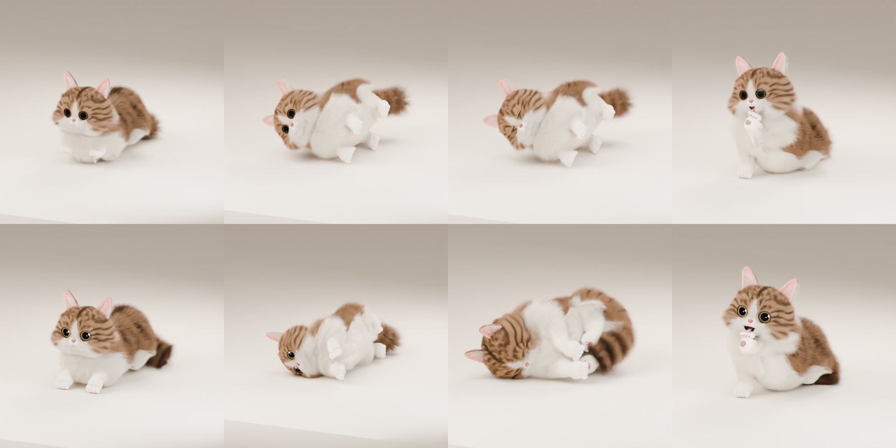
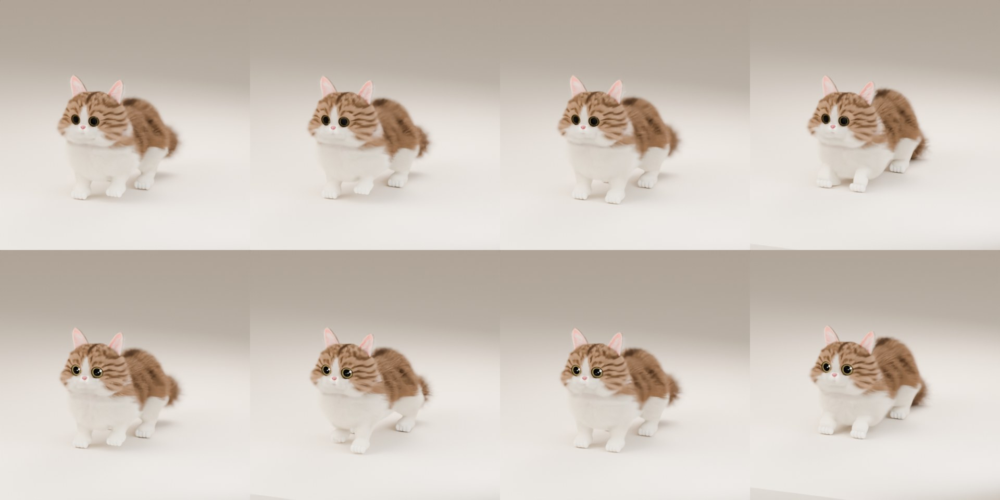
遗留（要你定）：① SideLie 从默认镜头看是肚皮和四条腿朝你（上侧腿关节离地约 30 cm、爪最低只能到 22–24 cm，再压大腿皮肤会顶到髋上方）——想看背对镜头的侧躺可以翻到右侧试。② Sleep 的脸在有毛的渲染里埋在爪子和毛里、闭眼不太看得出来（无毛预览很清晰），有现成旋钮可以让头回正一些。③ Lick 尾巴只绕到右后腿旁，再往前会穿进大腿；「后半身一团棉」剩下的是毛系统（大腿外侧白底毛把轮廓填平），按分工没动毛系统。④ Run 的代表帧和 Walk 很像（步幅小、抬脚低，单看一张图分不出）。⑤ Jump 后爪着地滑移 0.91 → 2.74 mm，是另一会话改身体比例/前臂蒙皮带来的，需那边复核。
四视图与面部为 round-k 的 standard 渲染（round-l 这一批只重渲了 15 个动作；四视图正在补渲）。定量判断以上面的几何实测与 reviews/ISSUES-2026-10-08.md 为准。
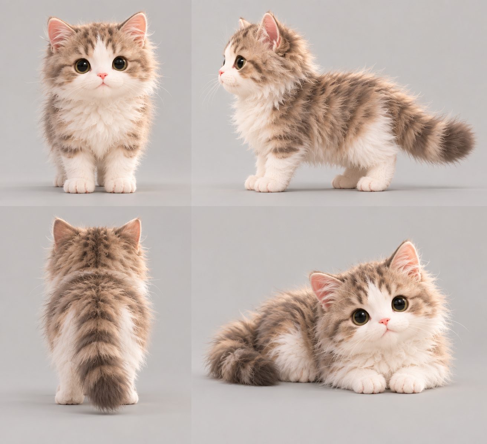
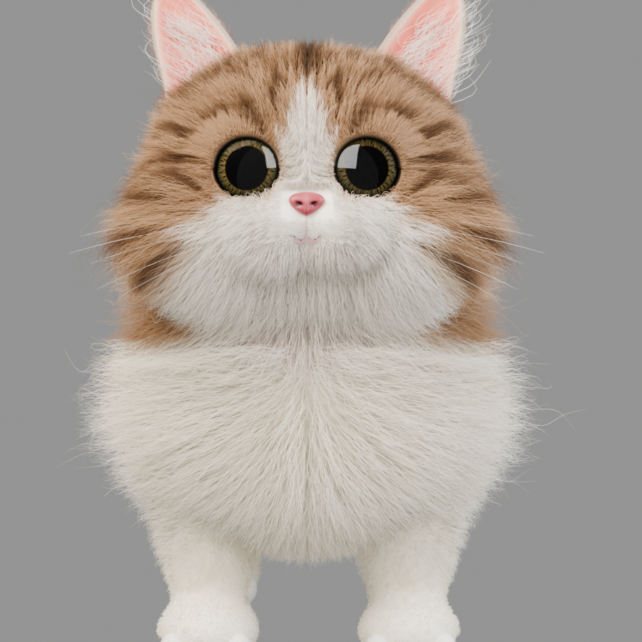
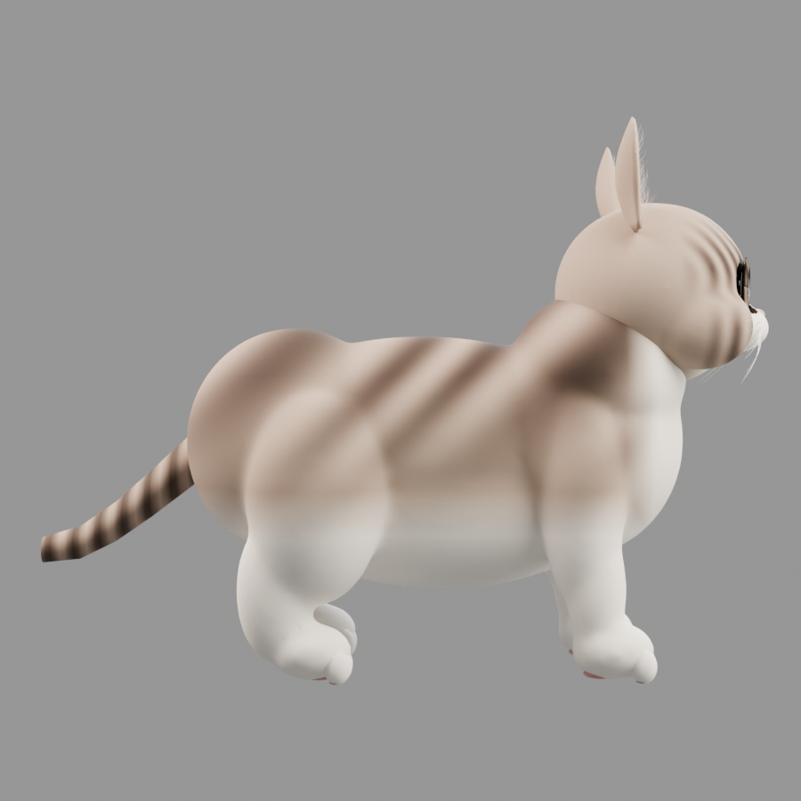
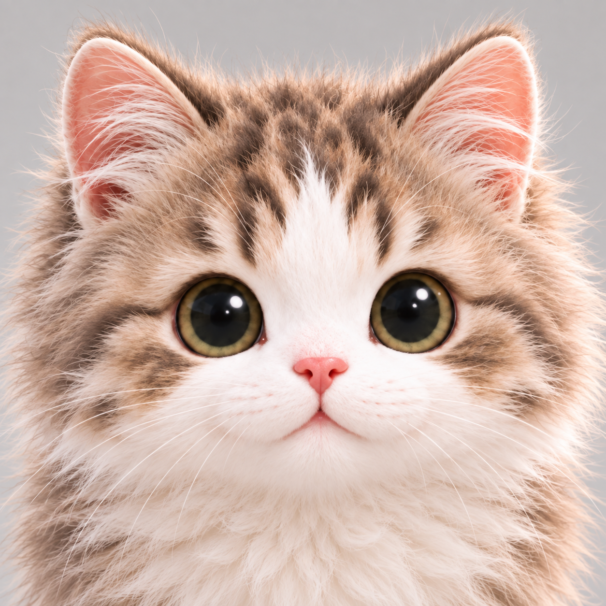
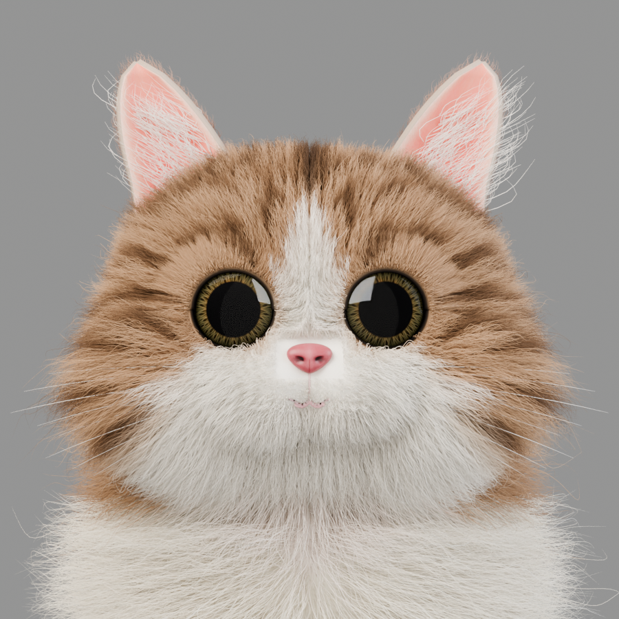
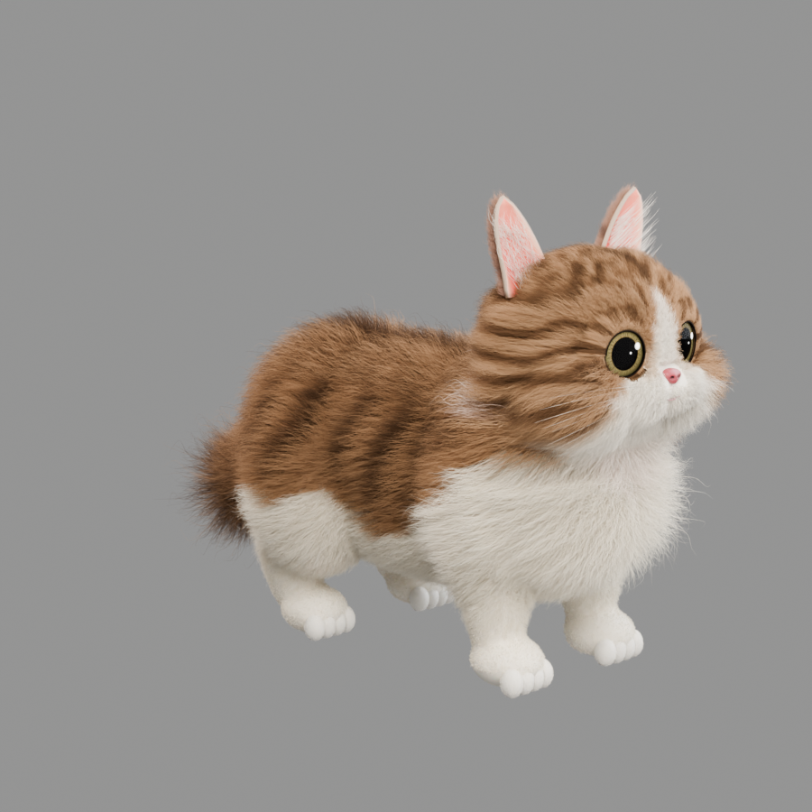
旧做法靠 LidUpper/LidLower 骨骼旋转整片睑：上睑顶部那条 8mm 的带被拉成 38mm（4.5×）、上下睑在眼角交叉穿插 17mm、眼窝毛窗不跟随——闭眼看像戴了眼罩。新做法把闭合写进 Blink/Squint shape key：逐顶点绕睑球心做球面旋转，内缘转满、外缘与眼角权重 0、中间按弧长分配；下睑毛 24000×20mm、睑皮提到 .85×毛色。每张卡上图＝修复后（round-h，当前状态），下图＝修复前的旧版对照（round-b4c，白眼睑就是当时的问题，不是现在的样子），640px 近景 48spp。
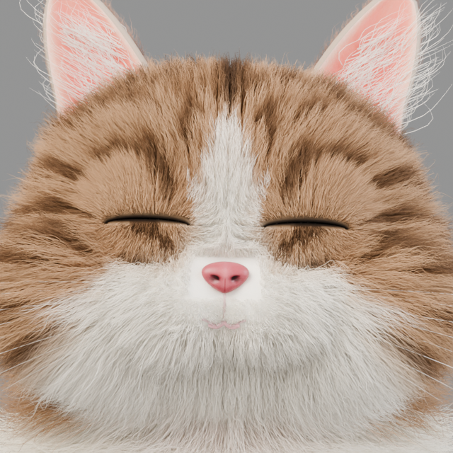
修复后 · 当前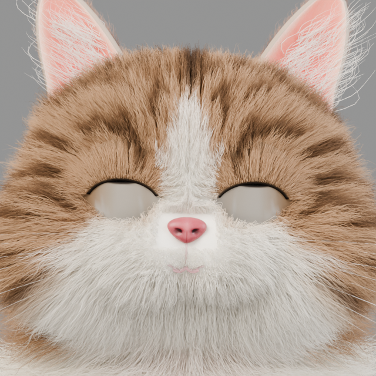
修复前 · 旧版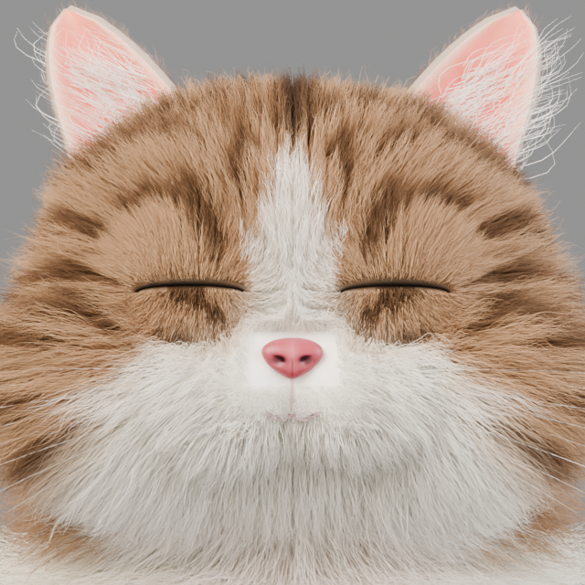
修复后 · 当前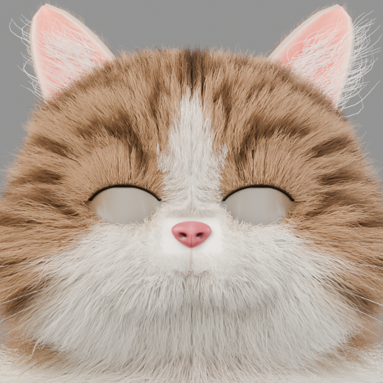
修复前 · 旧版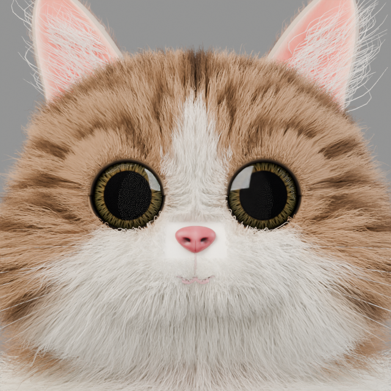
v6_part_audit.py（眼角位移 / 拉伸比 / 交叉量 / 露眼比例 / 拱形判定）。1 / 2 / 5 / 6 / 7 / 8 已完成（爪子、五个动作陷地、Stretch、Walk 后腿、Bite/Yawn、Jump）。round-h 批完成：闭眼重写 + 嘴第一步；round-j 批完成：嘴部重写（Jaw 转向纠正，Yawn 0.037→0.183、舔爪接触、犬齿 8.5mm）；round-k 批完成：步态重写（Walk 同侧重叠 0、滑移 0.04mm/帧、Run 接地、头颈相位）+ 躯干下缘（前腿可见/身 0.176，参考 0.174）；round-l 批完成：躺姿三兄弟重写（LieDown 狮身趴、SideLie 真侧躺贴地、Sleep 蜷成团 457mm）+ Lick 后半身与尾巴（−14.9 → −6.4mm）。剩余：3 的第二步（唇线 .970）、4（耳）、shell_rays 20→0、Bite 开口 0.128→0.15，以及新确认的骨架级遗留 肩高/身 0.67 vs 参考 0.59（见 reviews/ISSUES-2026-10-08.md E 节）。
| # | 做什么 | 怎么做 | 优先级 | 验收指标 |
|---|---|---|---|---|
| 1 | 爪子：让脚趾探出来 | 几何重建（toe_xy() / PAW）+ G2/G3：趾加高 42mm、外侧趾只后收 60%、趾毛改底绒 3.3mm×1400、剃毛区收窄。round-h 实测：前趾探出 +16.3…+20.0 mm、52–63% 顶点外露，四趾都有缝，秃带消失 | 已完成 | 外露 > 60% ✅；最深点 ≥ +8 mm ✅ +20.0 mm |
| 2 | 五个动作陷进地面 | Sleep −151 → −4.9；SideLie −166 → −4.5；Lick −86 → −15.0（几何极限）；Stretch −72 → −7.3；LieDown −63 → −8.0 mm（round-h 复测，含 G3 趾/嘴改动后的全身） | 已完成 | 目标 [−5, +5] ✅；Lick −15 与前腿打直冲突，见上文 |
| 3 | 嘴：收窄 + 下移 | 第一步已做（round-h）：V6_MOUTH_W .69、V6_LIP .98、V6_MUZZLE_GROW .006（G2 的露犬齿由口鼻部随唇线生长 + 犬齿后收 4mm 解决）。剩第二步：唇线 .970（现 lip_below_nose 24.2mm，参考 0.31E≈35mm），需配 MG≈.010 + 犬齿前皮肤厚度审计 | 中（剩第二步） | 嘴宽 0.29E（现 .272E ✅）、唇线在鼻下 0.31E（现 0.21E） |
| 4 | 耳：改比例和顶端 | ear_wid() .058→.044、flare 1.30→1.20、t>0.88 半圆封顶 | 高 | 宽 112 mm、w/h .83、顶端宽 ~30 mm |
| 5 | Stretch 要真的"伸" | 现在和 LieDown 是同一个姿态（root −110、身长变化 3.9 mm）。改成前爪大幅前伸 + 脊柱拉开 + 屁股翘起。已做：从 LieDown 组拆出独立成姿（root −.055、脊柱 .16、头 −.22、前爪前伸 −.11s、尾 −.35） | 已完成 | 不再是 LieDown 的第二张卡 ✅ 离 Idle 149° → 170°，最低点 −72 → −7.3 mm |
| 6 | Walk 后腿摆幅 | 后爪行程 6.7 mm → 15–20 mm（place_legs 的 gait 幅度）。已做：后腿 dy*=1.30; dz*=1.25（先试的 1.80 冲到 63.7 mm，过头了） | 已完成 | 后/前行程比 ≥ 0.8 ✅ 实测 45.0 / 36.3 = 1.24 |
| 7 | Bite / Yawn 补身体 | Bite：前爪抬起按住 + 头 pitch 到 15–20°；Yawn：加前腿前伸、弓背。已做：Bite 前爪抬 .11·fac + 头前冲；Yawn 前爪前伸 .075 + 弓背 .14 + 沉胸 −.030 + 尾 −.30/.22 | 已完成 | Bite 前爪 ≥ 80 mm ✅ 83.7（离 Idle 123° → 220°）；Yawn 身长 ≥ 40 mm ✅ 47（离 Idle 81° → 157°） |
| 8 | Jump 加平衡信号 | 起跳时尾摆动 ≥ 30°、耳朵后压、身体拉长。已做：尾 −.45/.30/.30、耳后压 .35、脊柱 +.10 | 已完成 | 尾 ≥ 30° ✅ 60.1°；耳 ✅ 20.0° |
| 9 | 侧面腰线 + 膝关节折角（你没点名，暂缓） | 先不动，等上面八项做完再看还显不显眼 | — | — |